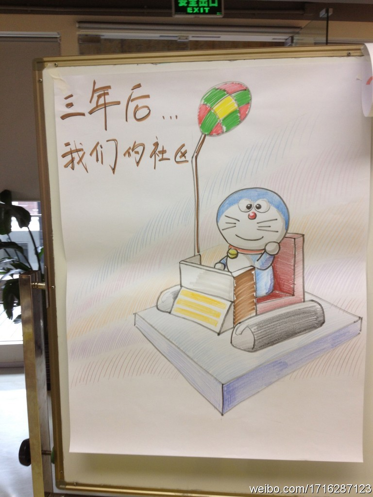

很多企业做不了长期利益的事儿。//@ben_杜玉杰:我们在#社区经理#微群里讨论过这个话题，简单归纳为"不能够给企业带来利益的社区都是耍流氓"，不过这个利益有很多种形式，也有长期和短期利益。@庄表伟 @Ada李力 同意否？请补充[呵呵] //@aaronivs:弱弱的问一句，社区对企业的意义在于？@孙德立:“社区经理培训之“传染－部落式社区对组织和个人的启示””，这个活动推荐给大家。 推荐给各位，希望魔都及其周边的同学多多参与，谢谢@ben_杜玉杰 组织，报名参加或有意参与的都可以“骚扰”我们的阿杜（@ben_杜玉杰 ）他会热情而洋溢的帮你 地址：网页链接 